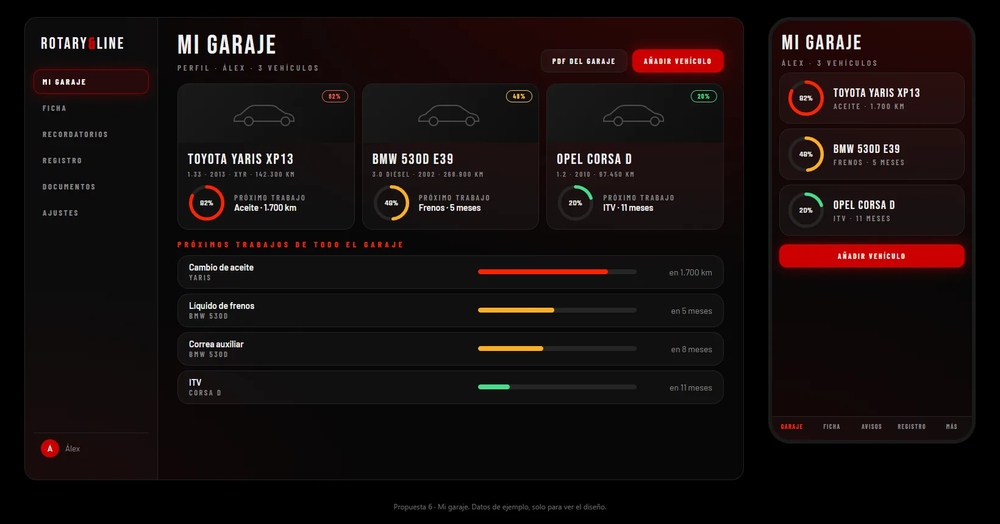
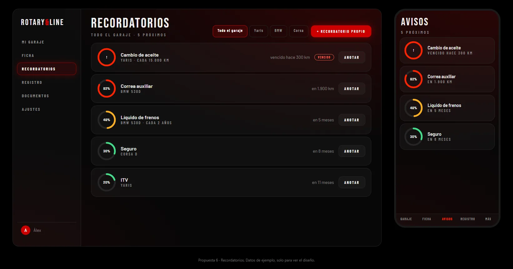
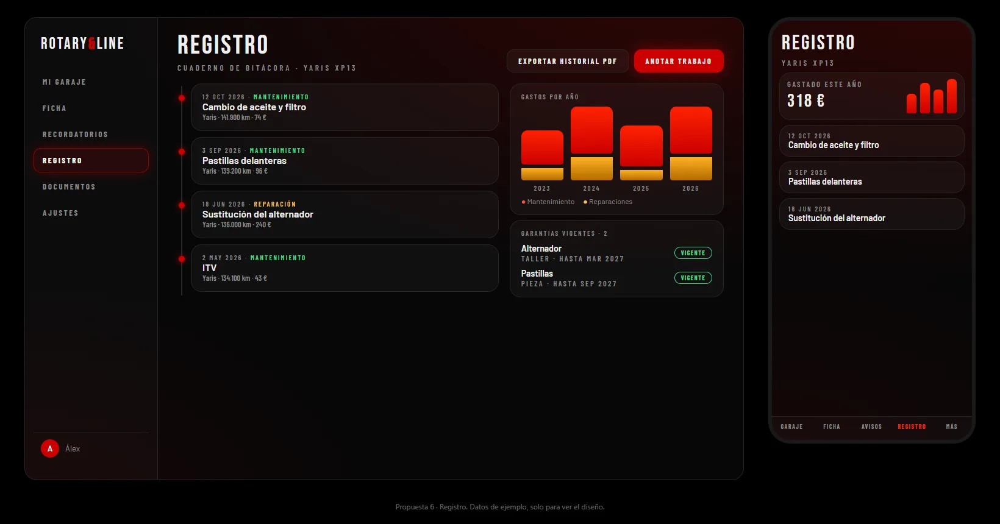
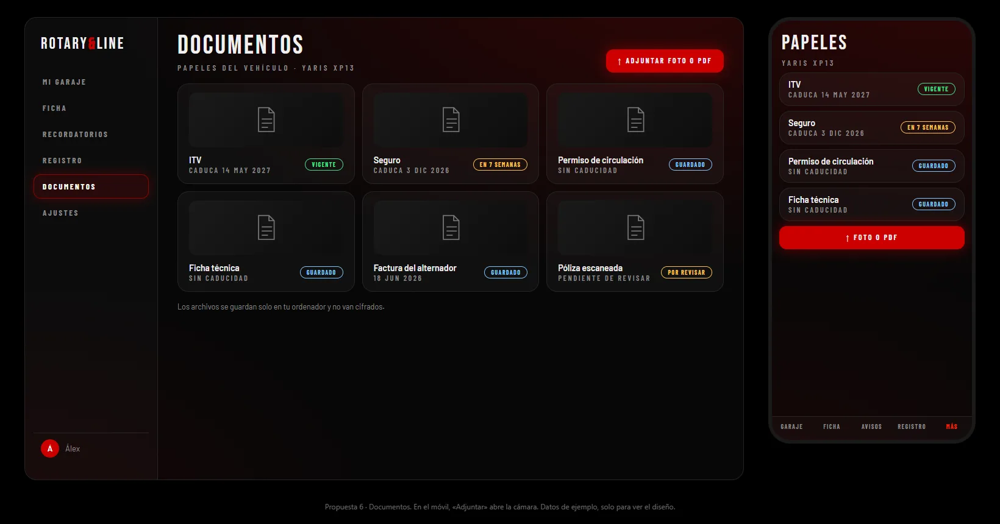

Windows y Android
APLICACIÓN GARAJE
Windows y Android
RotaryLine Garaje
Garaje es el programa del club para llevar el mantenimiento de tus coches y motos: un garaje con todos tus vehículos, recordatorios de lo que toca hacer, registro de cada trabajo y tus documentos en un solo sitio.
- Un perfil por persona con todos sus vehículos, con su silueta de coche o moto.
- Recordatorios por kilómetros o por fecha: aceite, frenos, ITV...
- Registro de cada trabajo realizado y documentos del vehículo.
- App de móvil para anotar sobre la marcha y sincronizar con el programa.
Las descargas se alojan en GitHub.




Las imágenes son del diseño de la aplicación, con datos de ejemplo.